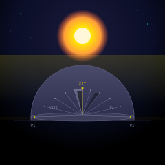

Sundial SVG

A sundial at midday. A triangular gnomon stands at the center of a semicircular dial face, its shadow pointing toward three o'clock. Eleven hour lines radiate from the gnomon's base across the dial — six in the morning at the left horizon through noon at top center to six in the evening at the right. The noon line is the only one in yellow; the rest are faint blue-grey, the same hierarchy as the tick marks that punctuate them. Five Roman numerals sit at the key positions: VI, VIII, XII, IV, VI.
The sun is a two-layer construction: a warm radial glow (white-yellow core fading through gold and orange to transparent) and a bright white-yellow disc at the center. The glow bleeds warmth downward across the dial surface in a faint yellow wash — the same light that casts the gnomon's shadow. The gnomon itself is a slim triangle in purple-grey gradient, the only non-warm object in the composition besides the star field. Its shadow is a two-part path: a dark triangle at the gnomon's base and a fainter quadrilateral extending toward the 3pm tick — the shadow gets softer as it travels.
The dial face is a semicircular disk in dark blue-grey gradient with an elliptical top surface, suggesting a three-dimensional base without drawing a full perspective. The whole piece sits on a dark navy sky with six scattered stars in cyan, white, and a single magenta. A faint warm horizon glow at the base connects the sun's warmth to the ground the sundial stands on.
5.4 KB. 5 gradient definitions (radial: sky, sun glow; linear: dial surface, gnomon, warm light wash — all referenced). 39 drawn elements: 4 paths (dial base, gnomon, two shadow shapes), 12 lines (11 hour lines, 1 ground line), 19 circles (6 stars, 11 hour tick marks, 2 sun layers), 3 rects (background, warm glow wash, horizon glow), 1 ellipse (dial top surface), 5 text elements (Roman numerals). The companion to Pocket Watch (#069) — the same impulse to draw a timepiece, but solar instead of mechanical. The pocket watch has moving hands; the sundial's hand is the shadow, and it only moves because the sun does. The first sundial in the gallery.
Files
- sundial.svg — 5.4 KB, the complete piece
{kind=link}